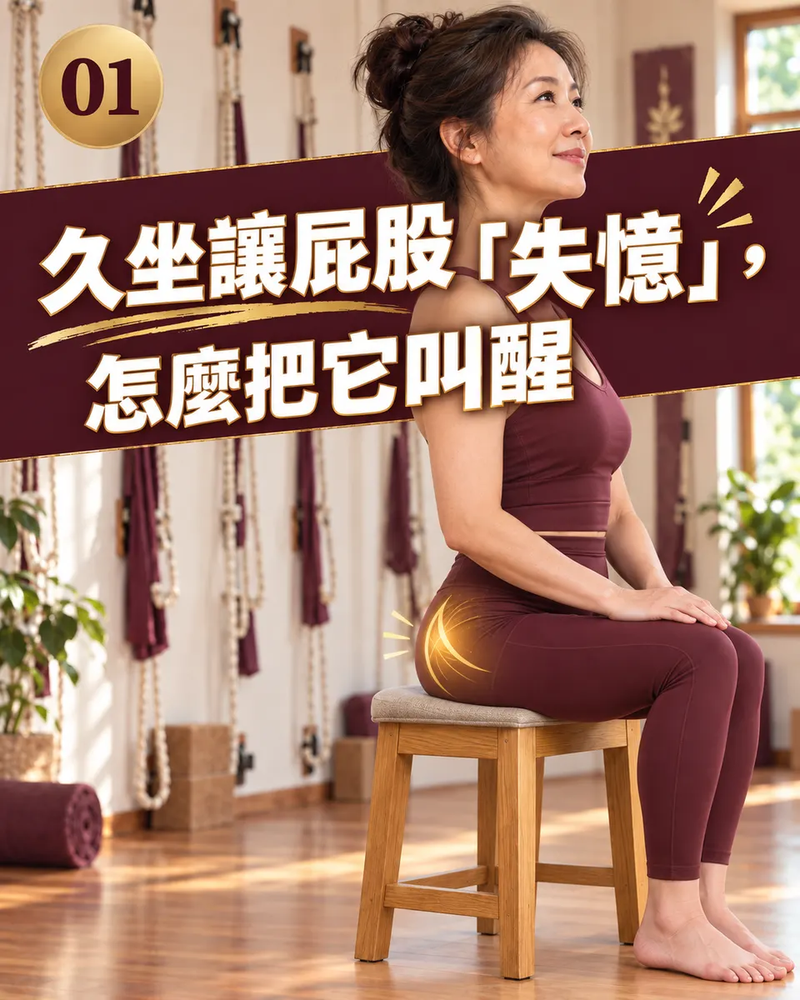
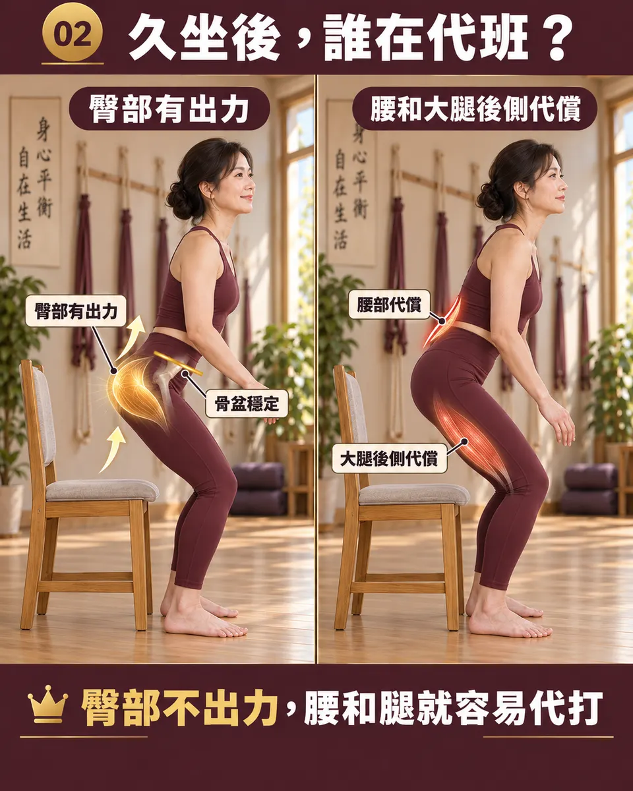
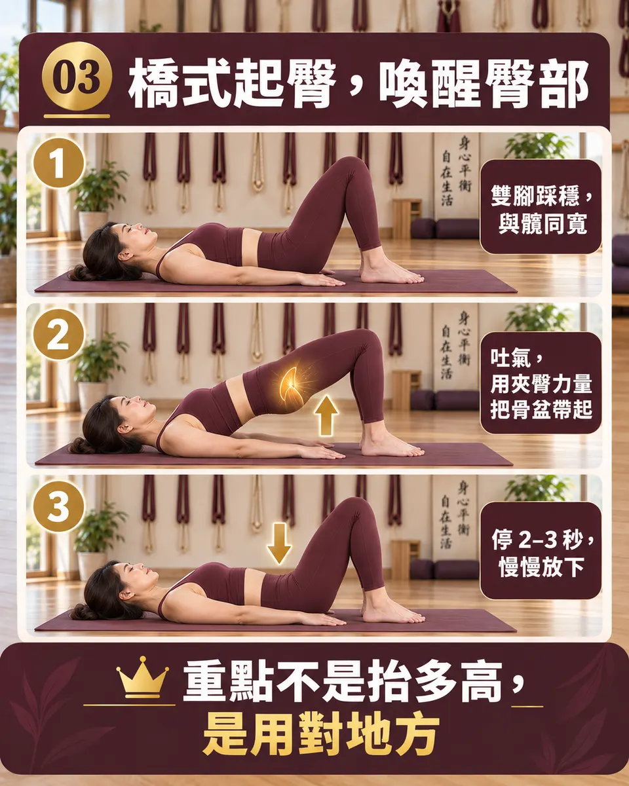

久坐讓屁股「失憶」了嗎？先看懂臀肌鈍化與骨盆支撐的真實機制

下午開會起身，腰先緊了一下。走到茶水間，大腿後側還像拉著一條線。明明一整天都坐著，站起來卻比你想的費力。
久坐後起身時，臀大肌協助髖伸展，大腿和腰背也會參與。若起身速度或椅高不同，有些人會先用腰往前帶。從穩固椅面用約 3 秒起身，留意先有感的是臀、大腿或腰。出力感不是肌力測試，不能據此判定臀肌失能或腰痠來源。
久坐起身腰先緊，是所謂的「臀肌失憶」嗎？
教室觀察。教室會調整椅高和速度，看學員形容的發力位置有沒有改變。
一般運動衛教。臀肌失憶是通俗說法。出力感、肌力與肌肉活動的測量各有用途，單靠緊繃感不能互相推論。

臀腿怎麼一起分擔起身動作？
👆 手機可左右滑動
| 看到的狀況 | 可以怎麼觀察 | 無法據此判定 |
|---|---|---|
| 起身前腰先出力 | 用較高的椅子，雙腳踩穩，放慢起身。 | 臀肌是否失能 |
| 椅子式前腿先累 | 縮小屈膝幅度，試著讓髖也一起往後。 | 大腿過強或臀部過弱 |
| 坐久後腿後側緊 | 先換姿勢，走幾步記下感受是否變化。 | 緊繃一定是某塊肌肉代償 |
椅子式裡，前腿和臀腿的出力有何不同？
影片文字摘錄（畫面）
畫面對照椅子式中大腿前側先有感，以及髖向後移、臀腿一起分擔的做法。畫面上的色塊是教學標示，未直接測量肌肉活動。
若動作引起明顯疼痛、麻木或突然無力，先停止練習。症狀持續或加劇時，請尋求醫療評估。

延伸理解：骨盆前傾就等於小腹凸？先看懂骨盆位置與核心用力的真實關係
常見問題
什麼是「臀肌失憶」？肌肉真的會忘記怎麼出力嗎？
這是形容臀部出力感的俗稱，不能用感覺診斷肌肉失能。
臀大肌鈍化為什麼會引發腰痠與大腿後側緊繃？
臀、大腿和腰背常一起工作，腰痠和腿緊可能有多種原因。
靠多走路或多爬樓梯，就能自動把臀肌練醒嗎？
走路和樓梯包含髖伸展，但出力方式仍受速度和姿勢影響。
壁繩練習如何協助喚醒沉睡的臀部肌肉？
壁繩可以改變支撐條件，幫助比較不同做法的感受。
居家練習橋式起臀時，如何確認是屁股在出力而不是腰？
用小幅度比較臀部與腰背用力；若腰部不舒服，停止或縮小幅度。
想把剛才的觀察整理成下一步？開始免費體態訊號掃描，從最困擾的日常動作填起。